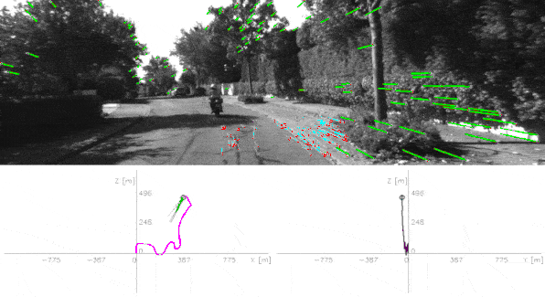
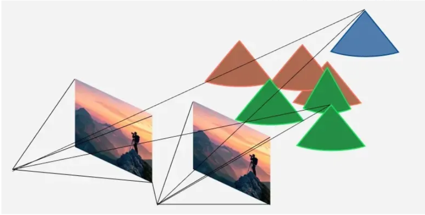
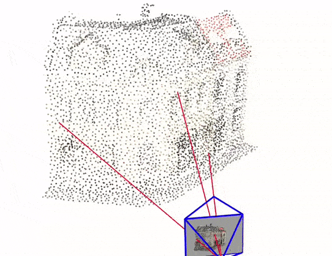
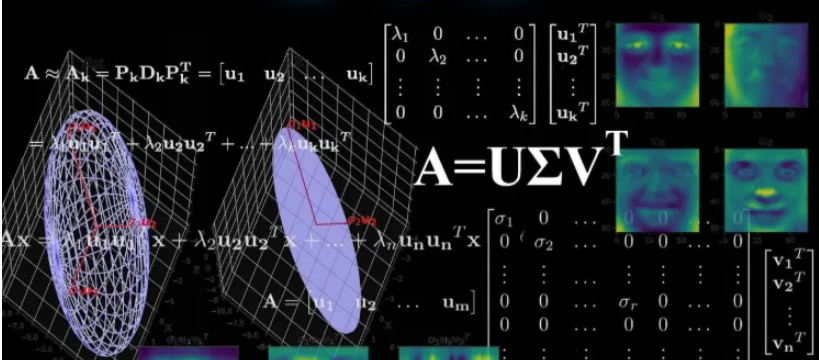
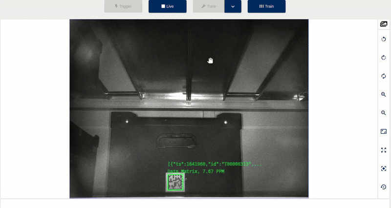

Blog — Selected Articles
Short previews of your Medium articles about robotics. Replace the placeholders with your real Medium titles, images and links.

Hands on SLAM Frontend: Landmark Lifecycle
In Part 1, I walked through my early experiments with feature detection, matching, and triangulation. I asked a question: if triangulation works so well, why not just keep doing it forever between consecutive frames? ...
Read on Medium →

Hands-On SLAM: My Experience Building a Visual Frontend Pipeline
You’re staring at a research paper about SLAM, and there’s this intimidating diagram with boxes labelled “Bundle Adjustment,” “Loop Closure,” “Pose Graph Optimisation.” Your brain immediately goes into overwhelm mode. Where do you even start? ...
Read on Medium →

Demystifying SVD: The Math Powering Visual SLAM
Singular Value Decomposition sounds intimidating, but it’s actually one of the most powerful and practical tools that helps robots understand what they’re seeing. Think of it as a mathematical Swiss Army knife that solves many of the core problems in robot vision...
Read on Medium →

Epipolar Geometry in Practice: Build, Visualize, Understand
I built a tiny C++/OpenCV repo you can run locally to feel epipolar geometry instead of just reading about it...
Read on Medium →

Foundations of Robot Perception: A Beginner’s Guide to the Math
When you’re building a robot that needs to see the world, you’re basically asking it to solve puzzles like: “Where is that object in 3D space based on what I see in this 2D camera image?” ...“How did the robot move between these two camera shots?”
Read on Medium →

Building a Robust Plane Segmentation Pipeline for 3D Pose Estimation in Robotics
When working on industrial automation systems, flashy CV models and deep learning pipelines often get the spotlight. But sometimes, it’s the quieter, lower-level problems — like reliably extracting a plane from a noisy point cloud — that make or break a robotic system...
Read on Medium →